Projects / AVTTY
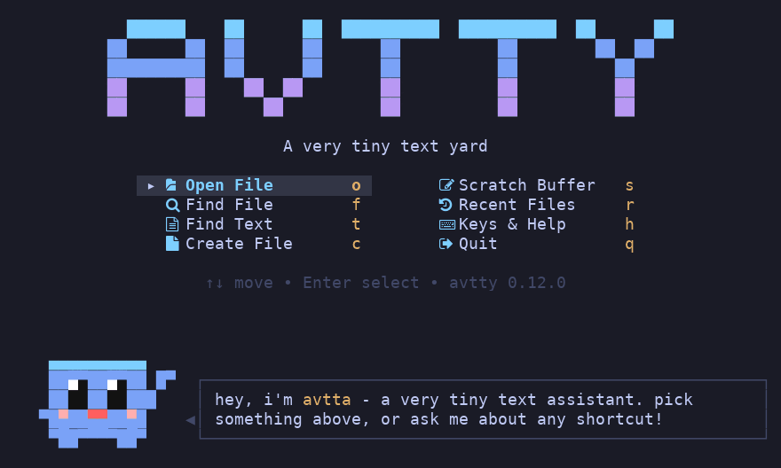
Meet avtta
avtta (a very tiny text assistant) is the small character that comes with AVTTY. It stays out of the way and appears only when something needs your attention, for example after a save, or when you try to quit with unsaved changes.
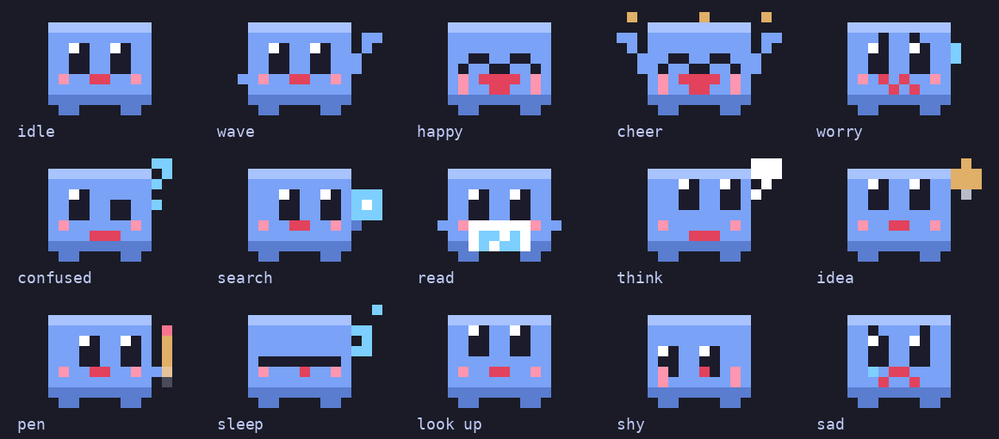
To create a file, type its name. AVTTY opens a new, empty file.
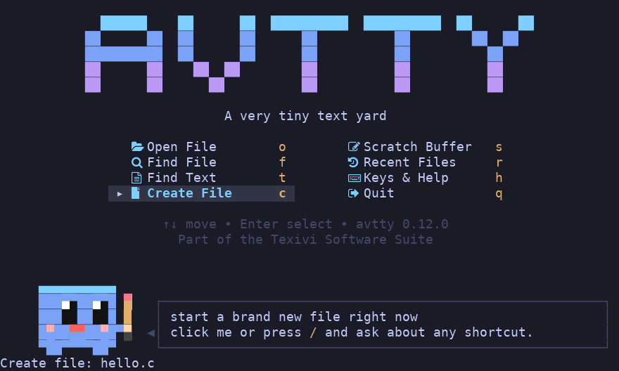
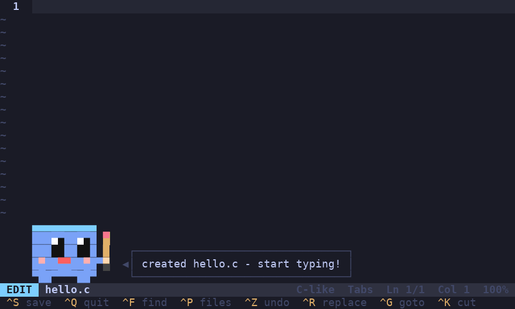
Syntax highlighting
AVTTY colours the code you write and indents new lines for you.
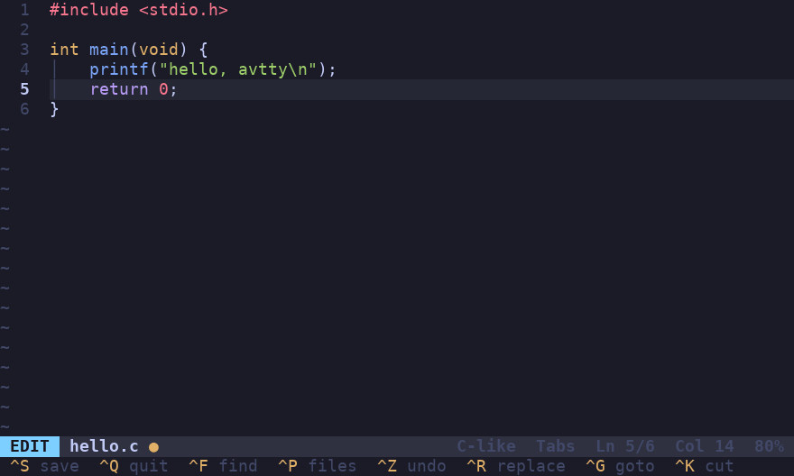
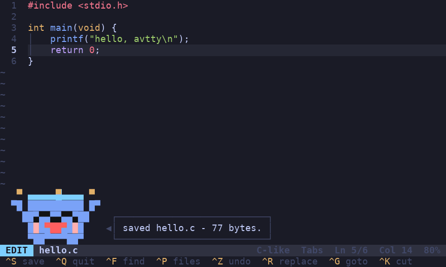
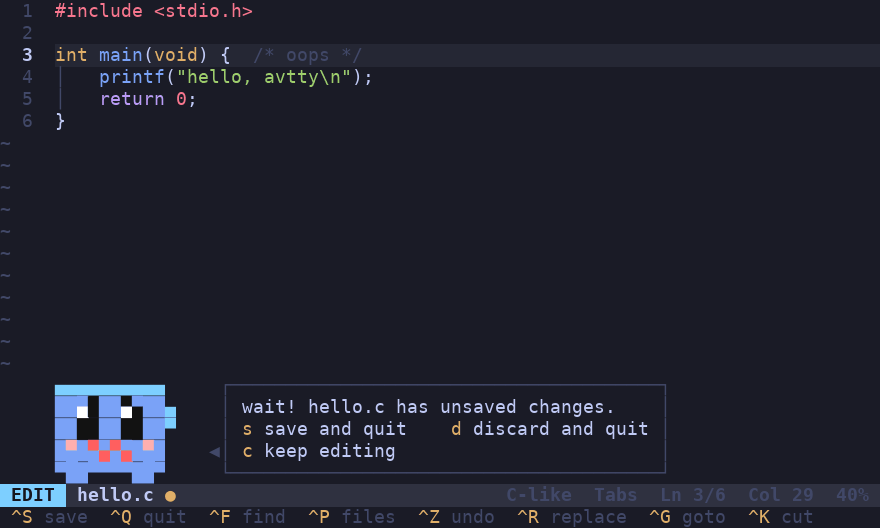
Finding things
There are three kinds of search. Ctrl-F looks for text in the file you are editing. Ctrl-P looks for a file by its name. Alt-F looks for text in every file in the folder.
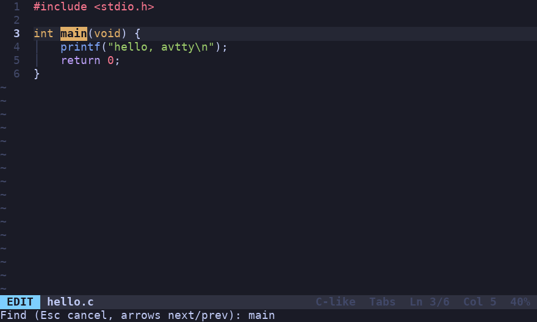
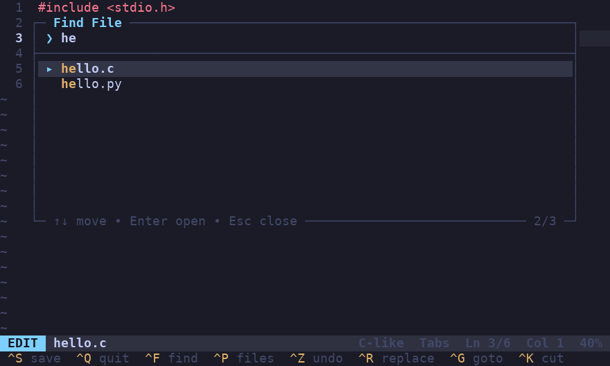
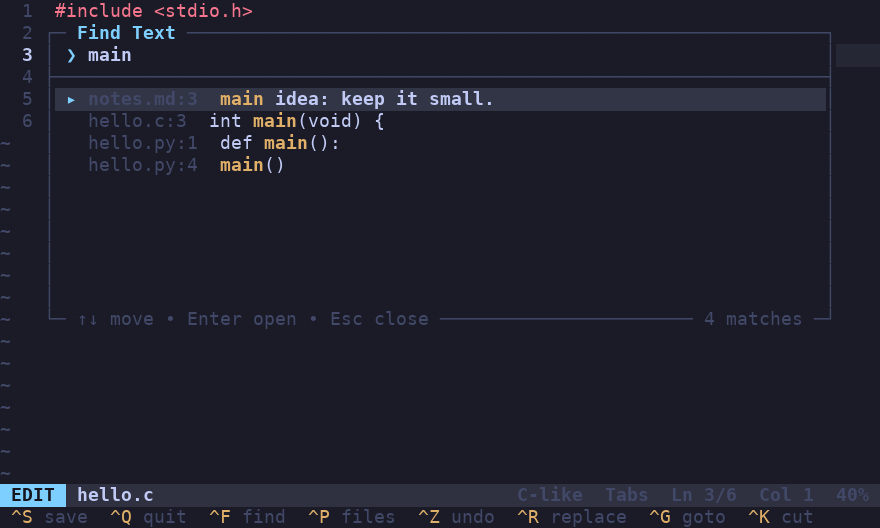
Asking avtta
If you forget a shortcut, press F1 in the editor (or / on the start screen) and describe what you want to do, for example "undo", "jump to a line" or "save". avtta looks up the shortcut for you. F1 or Alt-H also lists every key.
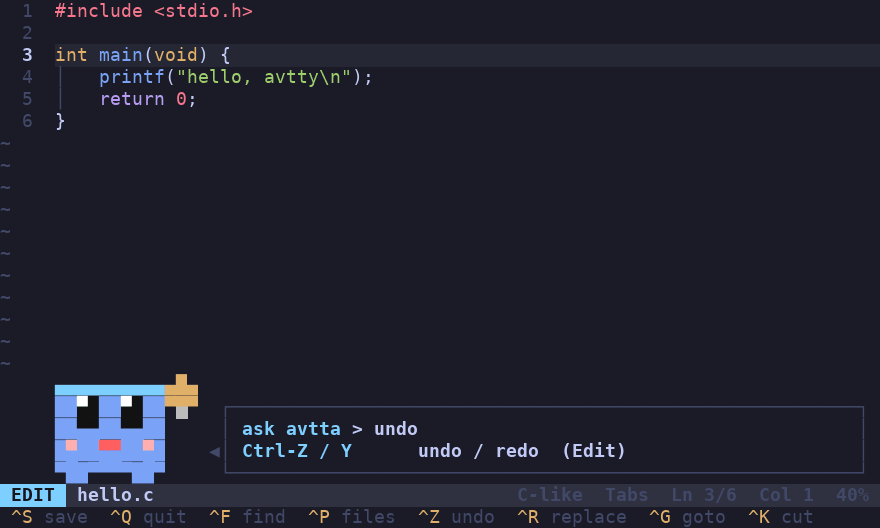
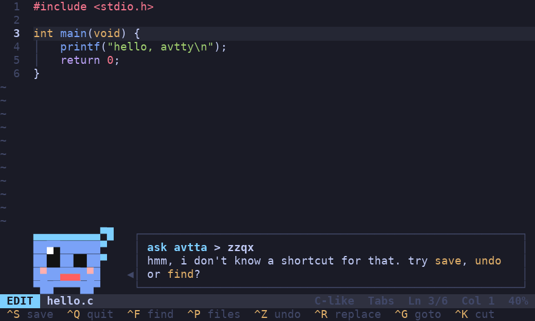
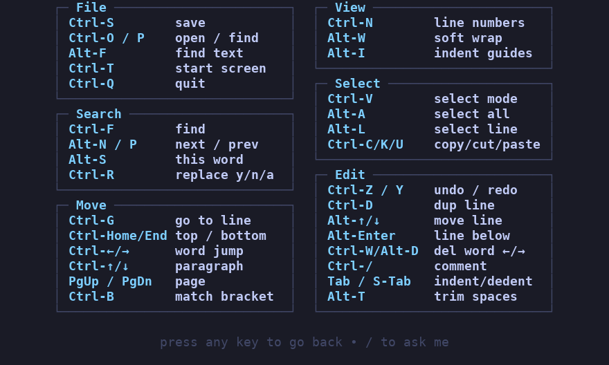
Small on purpose
AVTTY is about 2,800 lines of C, which is roughly 110 KB of source, and it builds to a program of about 100 KB. That is small enough to read in an afternoon, and it runs anywhere you have a terminal.
It edits one file at a time. It has no plugins, no split windows and no macros. If you need those, AVTTY is probably not the right tool.
Install
git clone https://github.com/texivi/avtty
cd avtty
chmod +x install.sh
./install.shYou can also build it yourself:
cc -O2 -o avtty avtty.cRun avtty -h for help.